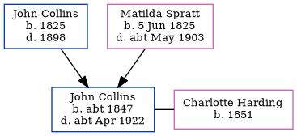

John Elgar Collins c1847 - c1922
[ Home ] | [ Calendar ] | [ Surnames Index ] | [ Errors ] | [ Family History ]The child of John Collins and Matilda Spratt, John Collins, the first cousin three-times-removed on the father's side of Nigel Horne, was born in Chislet, Kent, England c. 18471 and baptised there at St Mary The Virgin on 19 Sept 1847. He married Charlotte Harding at St George's Church, Ramsgate, Kent, England on 31 Oct 18743. Like his father, he was a shepherd.
During his life, he was living at Reynolds Farm in Chislet on 30 Mar 18517; at Sandwich Road, Minster, Thanet, Kent on 5 Apr 18916; and at Cheriton Street, Cheriton, Kent in 19011 and on 31 Mar 19011.
He died c. Apr 1922 in Elham, Kent, England2 and was buried at St Peter's Church, The Street, Swingfield, Kent on 10 Apr 19224,5.
Parents
- John was born in 1825
- Matilda was born on 5 Jun 1825
Citations
- 1901 England, Wales & Scotland Census - Findmypast (was age 52 and the head of the household)
- England & Wales deaths 1837-2007 - Findmypast
- Kent, Canterbury Archdeaconry marriages 1538-1928 - Findmypast
- Kent, Canterbury Archdeaconry burials 1538-1988 - Findmypast
- England Deaths & Burials 1538-1991 - Findmypast
- 1891 England, Wales & Scotland Census - Findmypast (was age 43 and the head of the household)
- 1851 England, Wales & Scotland Census - Findmypast (was age 3 and the son of the head of the household)
Media
1901 England, Wales & Scotland Census - GBC/1901/0004513718
Kent, Canterbury Archdeaconry burials 1538-1988 - GBPRS/CANT/D/95570726
Kent, Canterbury Archdeaconry marriages 1538-1928 - GBPRS/CANT/M/97006479/1
England Marriages 1538-1973 - R_848240350
England & Wales marriages 1837-2005 - BMD/M/1874/4/AZ/000065/141
England & Wales deaths 1837-2007 - BMD/D/1922/2/AZ/000173/088
1891 England, Wales & Scotland Census - GBC/1891/0005853866
England Births & Baptisms 1538-1975 - R_884110093
1851 England, Wales & Scotland Census - GBC/1851/0005819381
England Deaths & Burials 1538-1991 - R_276693914
Kent Baptisms - GBPRS/CANT/B/96110818
England Births & Baptisms 1538-1975 - R_884920261
Family Tree
Map
Generated by ged2site. Last updated on Jul 3, 2024
Known Issues
Listed in the residence for 1901, but spouse Charlotte Harding is not
Listed in the residence for 31 Mar 1901, but spouse Charlotte Harding is not